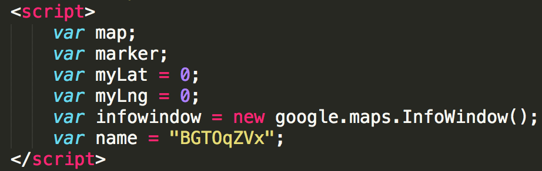
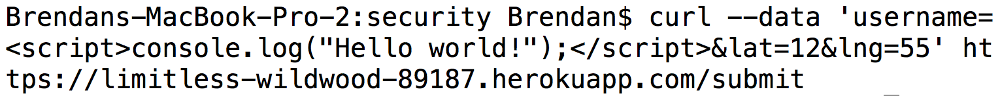
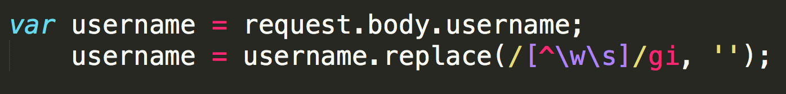
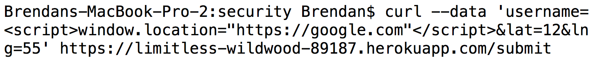
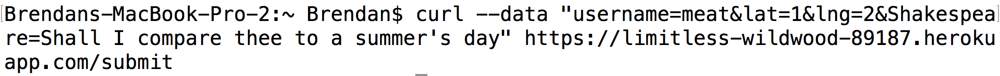

The product I am analyzing in this assignment is Avita Sharma's 'notuber' application, which allows clients to send and receive data about requesting or offering ride-sharing services. My job is to scan the application for security vulnerabilities and privacy problems to allow the client to better strengthen their app so that they can be protected from potential malicious threats.
In order to identify security and privacy threats, I first looked over the 'notuber' source code to see if I could observe any overt issues related to poor programming practices. Then, I began running tests using curl to see which HTTP routes had vulnerabilities that could be exploited. After recording my results from these tests, I was able to nail down three major security issues in the 'notuber' application that I will now describe.
In examining the 'notuber' application, I was able to find three major privacy/security vulnerabilities that can and should be remedied. First, I found a privacy issue in the index page that consisted of the client's username hard-coded into the HTML. Second, I discovered that the developer is not sanitizing client data before processing requests. Lastly, I found that as a result of not sanitizing data, the application is vulnerable to cross-site scripting (XSS) attacks.
After looking through the index.html page of the 'notuber' application, I quickly viewed an immediate security and privacy concern. The application developer chose to hard-code her own username into the public html document.
This is a problem because with the increasingly accessible nature of web browsers, anyone can easily view the source code for the index page and grab the username as well as the API key (which was commented out) to perform harmful actions (i.e. posing as the user to send hundreds of requests to rack up credit card bill, leave negative reviews, etc.). I would rank this as a relatively medium level threat, as it allows anyone to send requests to the server to gather data about the user's location and private information. To remedy this issue, I would recommend that instead the user pass her username dynamically instead of hard-coding it into the HTML.
When I began looking at the actual JavaScript in the index.js file for the 'notuber' application, I suspected that there might be a potential vulnerability regarding the trusting of client data. In fact, it turned out that when I ran the following command:
I was able to successfully insert JavaScript into the username field of a MongoDB document entry. As a result, when you open up the home page the JavaScript runs and prints 'Hello world!' to the console. This vulnerability came a result of the developer's failure to sanitize the data in the HTTP request body, and could have been avoided by simply including the following line when parsing the request body:
As a result of the developer's failure to sanitize client data, which was described above, I was able to perform a cross-site scripting attack by injecting JavaScript into the username field. I ran the following command to insert a script that immediately changes the browser window's location to the Google homepage:
The issue of cross-site scripting is extremely relevant in the world of web security today, as it remains to be one of the prominent sources of cyber attacks. The XSS attack that I performed could have been much more dangerous, but I simply wanted to demonstrate that literally any JavaScript could be inserted and run when XSS is not taken into consideration when designing a web app. While this XSS attack just redirects the page to a harmless URL, a cyber attacker could insert scripts that access the MongoDB database and store passenger locations, passwords, etc. I would rank this as a relatively high-level threat, as there are essentially infinite possibilities of what an attack could do when exploiting this vulnerability; they could inject literally any JavaScript they wanted.
After playing with the 'notuber' application's vulnerability to cross-site scripting, I realized that I could insert additional data fields through the '/submit' POST route, and that these fields would be stored on the MongoDB database while still receiving the same server response. To demonstrate this phenomenon, I ran the following command to inject a large text file as a 'Shakespeare' data member:
I would rank this as a medium level threat, as the only concern is the database cost of storing more data than is necessary, thus slowing down the GET routes. However, it is evident that one could easily exploit this vulnerability to quickly drive up server costs. Even though these additional fields will not ever be returned to the client through the GET route, it is still an issue that could easily be removed by only adding an object to the MongoDB database that has the desired fields.
In sum, it is clear that in its current state, the 'notuber' application has several major security vulnerabilities that must be fixed before the product is shipped out to consumers. While it is easy enough to sanitize data to prevent basic curl-level cross-site scripting attacks, it is reasonable to expect that experienced hackers would be able to find more sneaky ways to access private info (i.e. passenger locations), store it in their own database, and delete the 'notuber' database entry that contains the script. Therefore, it may be worthwhile to consider running a script on the server every so often that scans the database entries for any suspicious content, and if so removes them and investigates the issue. These additional measures may demand more server resources, but the payoff of ensuring the security of data and application content should be invaluable to developers. Much like a computer needs anti-virus software, developers need to include security software (whether they write or purchase it) to prevent any possibility of falling victim to cyber attacks that exploit security issues like those discussed above.
I referenced excess-xss.com to expand my knowledge about cross-site scripting.